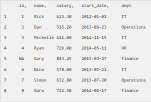

In R, we can read data from files stored outside the R environment. We can also write data into files which will be stored and accessed by the operating system. R can read and write into various file formats like csv, excel, xml etc.
In this chapter we will learn to read data from a csv file and then write data into a csv file. The file should be present in current working directory so that R can read it. Of course we can also set our own directory and read files from there.
Getting and Setting the Working Directory
You can check which directory the R workspace is pointing to using the getwd() function. You can also set a new working directory using setwd()function.
# Get and print current working directory.
print(getwd())
# Set current working directory.
setwd("/web/com")
# Get and print current working directory.
print(getwd())
When we execute the above code, it produces the following result −
[1] "/web/com/1441086124_2016"
[1] "/web/com"
This result depends on your OS and your current directory where you are working.
Input as CSV File
The csv file is a text file in which the values in the columns are separated by a comma. Let's consider the following data present in the file named input.csv.
You can create this file using windows notepad by copying and pasting this data. Save the file as input.csv using the save As All files(*.*) option in notepad.
id,name,salary,start_date,dept
1,Rick,623.3,2012-01-01,IT
2,Dan,515.2,2013-09-23,Operations
3,Michelle,611,2014-11-15,IT
4,Ryan,729,2014-05-11,HR
5,Gary,843.25,2015-03-27,Finance
6,Nina,578,2013-05-21,IT
7,Simon,632.8,2013-07-30,Operations
8,Guru,722.5,2014-06-17,Finance
Reading a CSV File
Following is a simple example of read.csv() function to read a CSV file available in your current working directory
data <- read.csv("input.csv")
print(data)
When we execute the above code, it produces the following result −

Analyzing the CSV File
By default the read.csv() function gives the output as a data frame. This can be easily checked as follows. Also we can check the number of columns and rows.
data <- read.csv("input.csv")
print(is.data.frame(data))
print(ncol(data))
print(nrow(data))
When we execute the above code, it produces the following result −
[1] TRUE
[1] 5
[1] 8
Once we read data in a data frame, we can apply all the functions applicable to data frames as explained in subsequent section.
Get the maximum salary
# Create a data frame.
data <- read.csv("input.csv")
# Get the max salary from data frame.
sal <- max(data$salary)
print(sal)
When we execute the above code, it produces the following result −
[1] 843.25
Get the details of the person with max salary
We can fetch rows meeting specific filter criteria similar to a SQL where clause.
# Create a data frame.
data <- read.csv("input.csv")
# Get the max salary from data frame.
sal <- max(data$salary)
# Get the person detail having max salary.
retval <- subset(data, salary == max(salary))
print(retval)
When we execute the above code, it produces the following result −
id name salary start_date dept
5 NA Gary 843.25 2015-03-27 Finance
Get all the people working in IT department
# Create a data frame.
data <- read.csv("input.csv")
retval <- subset( data, dept == "IT")
print(retval)
When we execute the above code, it produces the following result −
id name salary start_date dept
1 1 Rick 623.3 2012-01-01 IT
3 3 Michelle 611.0 2014-11-15 IT
6 6 Nina 578.0 2013-05-21 IT
Get the persons in IT department whose salary is greater than 600
# Create a data frame.
data <- read.csv("input.csv")
info <- subset(data, salary > 600 & dept == "IT")
print(info)
When we execute the above code, it produces the following result −
id name salary start_date dept
1 1 Rick 623.3 2012-01-01 IT
3 3 Michelle 611.0 2014-11-15 IT
Get the people who joined on or after 2014
# Create a data frame.
data <- read.csv("input.csv")
retval <- subset(data, as.Date(start_date) > as.Date("2014-01-01"))
print(retval)
When we execute the above code, it produces the following result −
id name salary start_date dept
3 3 Michelle 611.00 2014-11-15 IT
4 4 Ryan 729.00 2014-05-11 HR
5 NA Gary 843.25 2015-03-27 Finance
8 8 Guru 722.50 2014-06-17 Finance
Writing into a CSV File
R can create csv file form existing data frame. The write.csv() function is used to create the csv file. This file gets created in the working directory.
# Create a data frame.
data <- read.csv("input.csv")
retval <- subset(data, as.Date(start_date) > as.Date("2014-01-01"))
# Write filtered data into a new file.
write.csv(retval,"output.csv")
newdata <- read.csv("output.csv")
print(newdata)
When we execute the above code, it produces the following result −
X id name salary start_date dept
1 3 3 Michelle 611.00 2014-11-15 IT
2 4 4 Ryan 729.00 2014-05-11 HR
3 5 NA Gary 843.25 2015-03-27 Finance
4 8 8 Guru 722.50 2014-06-17 Finance
Here the column X comes from the data set newper. This can be dropped using additional parameters while writing the file.
# Create a data frame.
data <- read.csv("input.csv")
retval <- subset(data, as.Date(start_date) > as.Date("2014-01-01"))
# Write filtered data into a new file.
write.csv(retval,"output.csv", row.names = FALSE)
newdata <- read.csv("output.csv")
print(newdata)
When we execute the above code, it produces the following result −
id name salary start_date dept
1 3 Michelle 611.00 2014-11-15 IT
2 4 Ryan 729.00 2014-05-11 HR
3 NA Gary 843.25 2015-03-27 Finance
4 8 Guru 722.50 2014-06-17 Finance